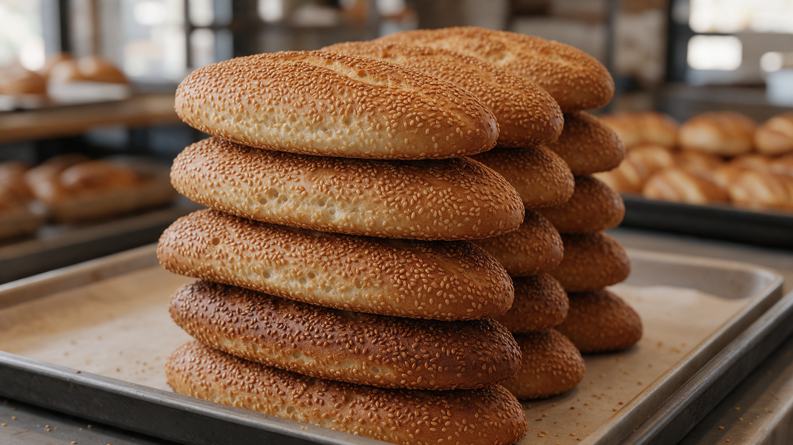

Fiş 01
Un henüz soğuk
Sabahın ilk tezgâhı. Alaçatı uyanmadan hamur yoğrulur.
Aşağı
Fırın notu
Susam kabuğundan
tezgâh düzeni.
1949’da Saim Menteş’in İzmir fırını. 1993’te Alaçatı Çarşı. Meşhur Çeşme kumrusu, damla sakızlı kurabiye, sabah unluları — aynı taş fırın dili, iki şube.
1949kök
1993çarşı
2şube
30+ürün
Güne Kale ile
İlk ışık,
sıcak tepsi.
Börek, poğaça, açma, gevrek — Alaçatı sokaklarında kahvaltı.
- 01Börek & talaşKıymalı · peynirli
- 02Poğaça & açmaKaşar · lor · dereotu
- 03Gevrek & simitÇıtır klasik
- 04Kurabiye tepsisiGünün her saati
Video
Tezgâh,
ekranda.
Orijinal sitedeki YouTube yayını — kumru, fırın ve Alaçatı tezgâhı.
Adres
Alaçatı’da
iki tezgâh.
Çarşı içi ve yol kenarı — aynı fırın, aynı susam.
Toptan
Kumru ekmeği
koli.
İzmir ve tüm Türkiye’ye 50’li / 100’lü koliler. Jelatinli poşet, ezilmeye karşı özel kutu.
Toptan ara
Yazışma
Mesaj bırak,
uğra.
Şube, tezgâh veya toptan ekmek — aynı gün dönüş.
- info@kumrucukale.com
- kalehan@kumrucukale.com
- Yol kenarı · 0232 716 93 63
- Çarşı · 0232 716 93 72